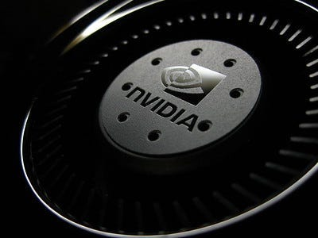
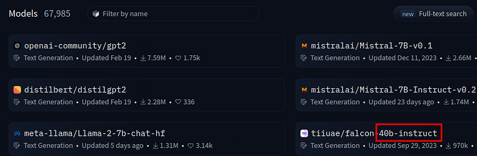
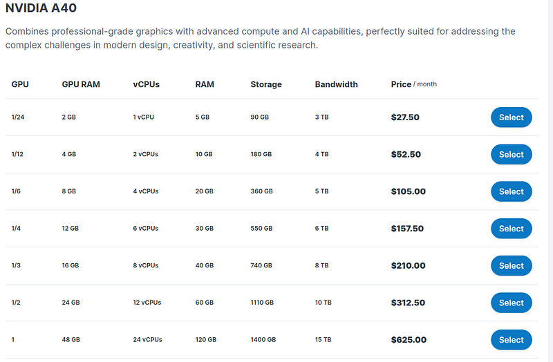
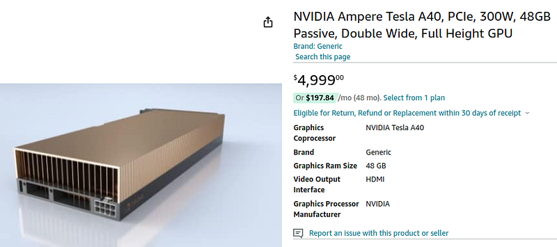
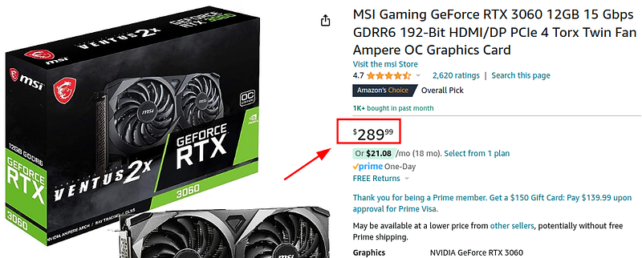
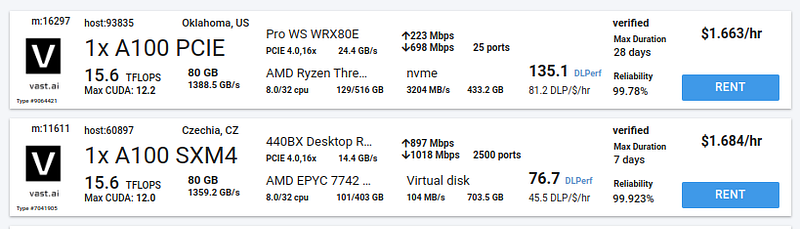
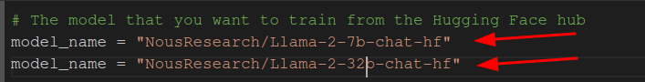
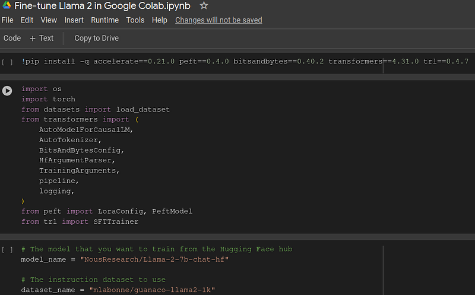
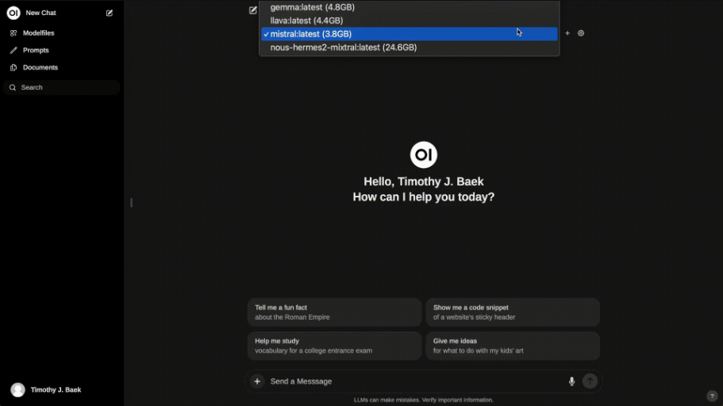

Your first and foremost goal should be to choose a path.
You have either the high performant path or the lower performant path.
The issue is power, accuracy and message length directly scale with parameter count and GPU power.
Your goal in customizing a language model should be a balance between power and cost.
Only you know your needs and circumstances, I will just show you the options that are out there for language models.
For this, it doesn't matter how you plan to train, customize or use language models, it will cost money.
Perhaps the only free thing you can do is use a language model that was already free. Even if you are solely a user of language models, paying for premium will immensely improve your results from the model just because of GPU power costs.
Requirements
To even use a custom model you need some efficient way to use GPU power.
It doesn't matter if it is a remote GPU for rent or a GPU at home you buy. There are libraries for both remote and at-home.
The key difference is price.
Pricing For Custom High Performance models
I would say a high performing model is at minimum 25B+ parameters.
If you want true performance 40B+ is where its at.
You will be surprised how well these high parameter models perform.
But yea, its expensive.
For a high performing model you will have to spend money, there is no getting around it
Let's look into it a little bit.
Contabo is a known remote PC vendor for its cheapest pricing with remarkable features.
Take a look at their pricing...
This is cheaper than Amazon and the grand majority of GPU vendors out there.
Notice the extravagant prices with 24GB of VRAM at $312/month.
If you wanted to create your own high performing LLM with a remote server, these would be the best costs.
Now lets look at GPU prices here online.
That same GPU at twice the VRAM costs upwards of $4,000+.
These are the prices you should be thinking for high performance and customization, at the minimum.
70B+ parameter models are where you get competitive with production models.
These often take 40GB+ VRAM to host.
Sad, but true.
The prices of hardware will go down, models are going to get smaller and AI specific hardware is being created as we speak.
Give it time, but for now language modeling is a gold rush.
Pricing For Lower Performance Models
Thankfully we can use lower performing models for much cheaper.
I will be transparent, anything below about 7B parameters is not worth it for your own usage.
0.5B to 4B parameters would be good for testing, developing models and fine-tuning but for actual usage the recommended minimum is 7B parameters.
The model itself impacts performance, but the higher parameters are the starting point.
For lower models I would say you need at least 12GB of VRAM.
Ideally you would have around 20GB of VRAM but 12 will get you by running a 7B parameter model.
At these levels I would not recommend renting a GPU but rather buying a GPU at home.
Let's look at the price:
For a 12GB card you are looking at around $250-$280.
Much more accessible.
These are worth it for general programming and development of graphics/AI at home.
You can run a model with this using model compression.
Though I would still recommend shilling out another $200 for the extra 4GB of VRAM

At 12GB you would have to exit all GPU intensive programs and dedicate the entire GPU to the AI.
Just those 4GB will massively improve model performance and give you a little wiggle room to run a video game or GPU programs in the background.
Methodology for saving money
Where you need 60GB-80GB of VRAM to train/fine-tune you only need about 30GB to actually host the model.
For this reason I recommend always always always renting a high performance rack for fine-tuning and training.
If you train on your own GPU, your requirements sky rocket for the same model power.
It takes much less GPU power/VRAM to use a model rather than train or fine-tune a model.
You will save yourself a lot of hassle training remote.
Here is a vendor price for this:
Look at those wonderful prices. Mwah!
vast.ai at this time provides the cheapest model renting per hour on the space.
Yes if you multiply the usage/hour to an entire month it is extremely expensive.
But, you only need the model running for 20-40 hours or so, depending on your dataset.
The basic idea is to get a low parameter model like 0.5B or 1.3B and train/tune it on your custom dataset.
Because of how the transformers library works all you need to do is replace the name of the model in the script and it is ready for training,
The basic steps for using a remote training GPU is this:
- At a low parameter count create a fine-tune or training script
- Replace the model name with a high parameter count
- Convert the script to a python file
- Run and tune the script on the remote server
- Upload the new model to HuggingFace
- Delete and remove the GPU server
- Use your custom LLM
It all starts with pricing, and those points I just made are your options.
Why the transformers library for beginners
Lets say you have chosen your path and model parameter count. How would I get started learning language models?
Well, you don't need much.
In reality you just need some python skills, I mean Chat-GPT premium.
The HuggingFace transformers library has abstracted away so much of machine learning, you don't need some massive PhD to get started.
All you need is a working script you can find on google, replace the model name and copy paste into Chat-GPT to explain things.
I know "use Chat-GPT" won't age well, but if its 2026+ when you are reading this, just replace Chat-GPT with the best language model vendor of your time.
These abstraction libraries give immense power for little skill.
After some time using the transformers library you can switch to pure PyTorch or start getting more granular on how you train models.
Just use a custom model
The first and foremost thing is to simply learn to use different models with the transformers library.
Start up a Python notebook and run a model.
Try to get it hosted with Gradio inside the script or run it on Ollama with some video card frontend.
You can find Ollama here.
The basic idea is to simply start consuming custom models.
I would recommend Ollama and Open Web UI:
Backend: Ollama
Frontend: Open Web UI
With these two you can insert your custom models, tuned and trained into Ollama and deliver the model to Open Web UI for a look like this:
Once you have the workflow for simply using custom models, you can move on to training and fine-tuning.
Content to consume
There is something I want to explain about content regarding deep learning.
Its the math. The math is all the same.
What we are looking at is abstractions.
All the changes and amazing libraries, methodologies and framework features, its great and all but the underlying math is all the same.
It doesn't matter how many years pass, deep learning is deep learning.
For this reason, don't be afraid to study older deep learning material.
There is a lot of evergreen machine learning content out there.
The issue is identifying which are evergreen and which are outdated.
The math for deep learning has been around since before the 1960s. So why have we not developed AI till now?
Hardware.
That is the answer its hardware.
We are creating all these abstraction layers upon layers on the fundamentals of machine learning.
Yes it is very good to learn the layers.
And yes its good to start at the top of the layer, the most abstract, and work your way down.
But much machine learning content from years ago is still essential for overall learning.
It is still relevant.
What is sort of useless is the old abstractions.
The super low level stuff will always be the same, its the outdated abstractions that you don't want.
Despite this it is good to start at the highest layer, the most abstract for developing workflows and general understanding.
Assuming you have chosen your pricing path, let's look at the easiest resources to consume.
If you are an absolute beginner, I recommend consuming these from top to bottom
- At this time the best blog and working Python script I could find was this one. I recommend starting with the script: Fine-Tune Your Own Model Using Transformers Library
- Next up is a lecture on LLMs for beginners where he explains the latest abstractions
- The best explanation for the lower layers (evergreen): deep learning under the hood
- Read (evergreen) Attention is all you need
- Read (evergreen) Bert Transformers
- Read (evergreen) Word2Vec
- Code, read daily
Anywho, I hope you learned something...
CTA: Check out my book on learning code
Happy coding!
Resources
Rent GPUs for tuning/training: https://vast.ai/
Backend for model hosting: https://github.com/ollama/ollama
Frontend for model hosting: https://github.com/open-webui/open-webui
Free beginner Python script: https://mlabonne.github.io/blog/posts/Fine_Tune_Your_Own_Llama_2_Model_in_a_Colab_Notebook.html
Great LLM lecture: https://youtu.be/mrKuDK9dGlg?si=WoOZv3cNfqraa5Fz
Great deep learning playlist: https://youtube.com/playlist?list=PLZHQObOWTQDNU6R1_67000Dx_ZCJB-3pi&si=iv8Fbt2BVL5PbIap
Attention is all you need: https://arxiv.org/abs/1706.03762
Bert: https://arxiv.org/abs/1810.04805
Word2Vec: https://arxiv.org/abs/1301.3781